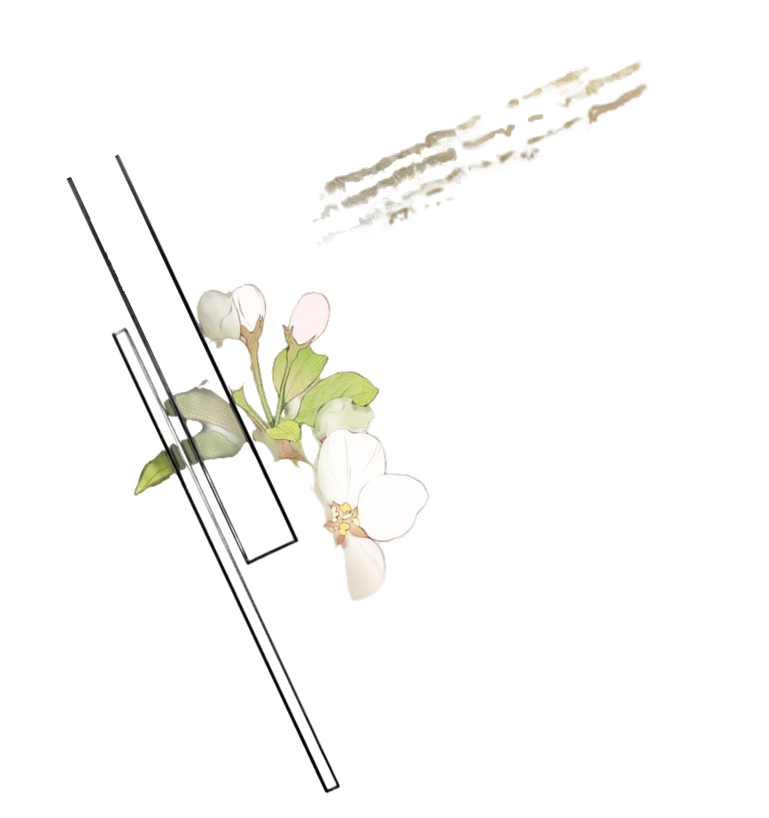

What is the Season?
In 18th and 19th century Britain, “the Season” was the months each year when noble families left their country estates and moved to the capital. It lined up with the time Parliament was meeting, roughly spring to summer, so the whole upper class was in one city at once.
That made the Season the place to be seen. Families hosted balls, dinners, and parties almost every night, and parents used it to find good marriages for their sons and daughters.
When a manhwa heroine dreads “the social season” or a duke “finally comes to the capital,” this is the calendar the story is borrowing.

The debut
A young woman's debut was her official entrance into adult society. Around the age of 17 or 18, she was presented to the monarch at court, usually by a married woman of good standing such as her mother.
Debutantes traditionally wore white gowns. At the Victorian court, they also wore long trains and feathers in their hair. After her debut, a young woman could attend balls and receive suitors.
The British court stopped presenting debutantes in 1958, but debutante balls still happen in some places today.
In manhwa, the debut ball is often the heroine's big turning point: the first time the male lead sees her, or the first public scandal of the story.
Balls and dancing
Balls were the center of the Season. A few customs explain a lot of manhwa drama:
- The first dance was an honor. Who opened the ball, and with whom, told everyone who mattered most.
- Dance cards were small cards where ladies wrote down which gentleman had asked for each dance.
- Dancing with the same partner too often was a signal of serious interest, and could start gossip about an engagement.
- Escorts mattered. Arriving on a man's arm told the room something about the relationship.
Tea parties
Afternoon tea became popular among the British upper class in the 1840s. It filled the long gap between lunch and a late dinner, and it soon became a social event of its own.
Tea parties were mostly hosted by women, and they were where reputations were made or ruined. Invitations, seating, and who was left off the guest list all sent a message.
Manhwa often treat the tea party as the noblewoman's battlefield, where heroines and villainesses trade polite insults over cups of tea.
Courtship and engagement
Courtship was watched closely. An unmarried young lady was usually accompanied by a chaperone, and being alone with a man could damage her reputation.
Marriages among nobles were often arranged by families to join land, money, or political power. Before the wedding, the families' lawyers wrote a marriage settlement, a legal contract about property and money.
A suitor was expected to ask the young lady's father for permission before proposing.